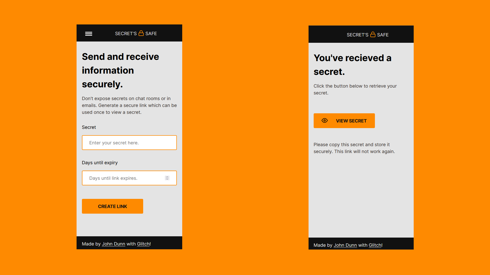

Secret's Safe
The goal
In my opinion the best websites or apps are written to fix a problem. I often have to send a user's password to them for work, the current method is to send them via text message because it isn't safe to send passwords via email. The company I work for pays for credits on a website so that all of the staff can send SMS from a central location, but I've seen services similar to this before where you can provide a link to a password which expires after use or after a specified amount of time. Rather than switchover to another chargeable service, I built one myself.
The stack and why
The front-end is written with HTML, CSS, and JavaScript, and the back-end was written with Node.js and Express.js. As I'm getting more comfortable writing JavaScript because of it's use in the front-end it made sense to carry on using a technology for the back-end that is written with JavaScript, too.
The secrets are encrypted in the back-end and stored in a MongoDB database, they are then found in the database, unencrypted so they can be sent to the browser, and deleted when retrieved.
Problems and solutions
The basic implementation of having a form where you can enter some information, which provides a link that someone else can use to retrieve the information, wasn't that difficult to write up. Most of the issues in this project were around tooling. I started using an NPM package which I've worked with before to encrypt the secrets, before realising that the package couldn't unencrypt them so I had to find a module which could do both.
I had to find a way to delete the records in the database which had expired, luckily there was a way in MongoDB Atlas to set this up based on the expiry date I was saving with the record, as my original idea of having the back-end constantly live and intermittently checking for records to remove would have caused a lot of unnecessary processing.
Lessons
In the write up of my previous project, Threecast, I said that the biggest lesson I had learned was that I should have put more planning into the design and infrastructure beforehand. I definitely followed through with getting the design arranged before starting this project, but I could have pre-solved the issues I had faced if I had looked into the packages and infrastructure I was using prior to writing any code.
I had watched this video from Kyle at Web Dev Simplified, and although there are many valid points, the last section about breaking down the project into smaller tasks really hit home. Before I started writing any JavaScript I went through each of the requirements in this project (like getting the content of the input and sending it to back-end, encrypting the secret and saving it to the database, manipulating the DOM to show the link to the secret, etc) and I created a function for each with pseudocode explaining what I needed to do. When it came time to writing the code, it basically boiled down to reading the steps I had written for myself and writing the code for the job which seemed much more manageable.
There were some challenges but I had a lot of fun with this one.